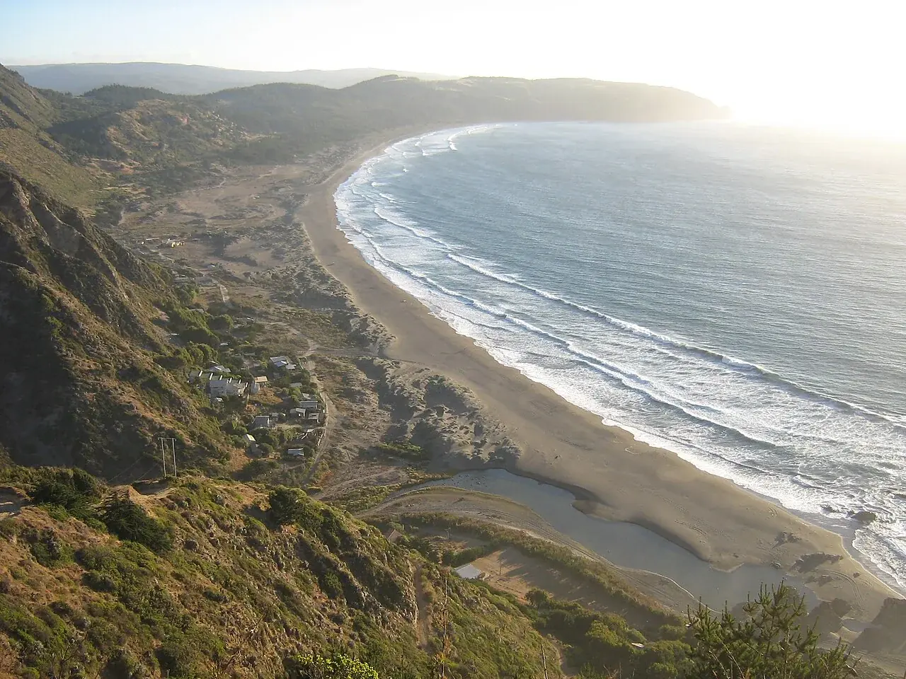

Puertecillo
O’Higgins, Chili · surf

Un village de surf sur la côte de Navidad. Une escale entre les collines littorales et le Pacifique.
- Lieu
- O’Higgins, Chili
- Niveau
- Variable selon les conditions
- Activités
- surf
- Type d'eau
- Mer / océan
- Coordonnées
- -34.08, -72.00 (position approximative du secteur)
Ouvrir dans Ocean Buddy Télécharger sur l'App Store
Source : Chile Travel.